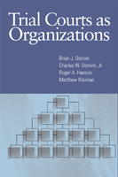

How trial courts operate and administer justice
How trial courts operate and administer justice


 How trial courts operate and administer justice
How trial courts operate and administer justice

|  |
Trial Courts as OrganizationsBrian J. Ostrom, Charles W. Ostrom, Jr., Roger A. Hanson and Matthew Kleimancloth EAN: 978-1-59213-630-8 (ISBN: 1592136303) |
"I think that this is the most innovative study of trial courts in the past ten or fifteen years. Substantively, the authors combine trial court scholarship and in particular the conceptions of court workgroups, culture and context with business research that directs attention to private sector organization and management. This combination is truly path-breaking."
—Susette Talarico, Albert Berry Saye Professor of American Government and Constitutional Law and Meigs Distinguished Teaching Professor of Political Science Emerita, University of Georgia
Court administrators and judges have long acknowledged that culture plays an important role in the function of trial courts. Trial Courts as Organizations provides a comprehensive framework for understanding this organizational culture, along with a set of steps and tools to assess and measure the current and preferred culture.
The authors examine how courts operate, what characteristics they may display, and how they function as a unit to preserve judicial independence, strengthen organizational leadership, and influence court performance. They identify four different types of institutional cultures using a systematic analysis of alternative values on how work is done. Each culture is shown to have its own strengths and weaknesses in achieving values, such as timely case resolution, access to court services, and procedural justice. Accordingly, the authors find judges and administrators prefer a definite pattern of different cultures, called a "mosaic," to guide how their courts operate in the future.
Excerpt available at www.temple.edu/tempress
"A wonderful-and welcome-addition to the literature. To say that political scientists have failed to devote sustained attention state trial courts is to way understate the case. If scholarship was commensurate with caseloads, nine out of every ten studies would focus on these arenas, and not the U.S. Supreme Court or even the lower federal courts-as they currently do. Not only does Trial Courts as Organizations go some distance toward remedying this imbalance, it also does the really hard work of building a foundation for future scholarship. A very impressive achievement indeed."
—Lee Epstein Beatrice Kuhn Professor of Law, Northwestern University School of Law
"The study adds significantly to the scanty body of empirical research on courts."
—Choice
"Ostrom and his colleagues have produced an important contribution on the topic of state trial courts….The book is well written and argued, and it presents original empirical evidence. I think anyone who reads the book will find it an interesting and important contribution to the work on trial courts in particular, as well as to the notion that cultural variation across courts has consequences for court performance and output."
—Perspectives on Politics
"Even though the book is directed at students of policy making and public administration, students of political science and law will be amazed by some of the results. The authors suggest that even they are surprised by the results of their own research. The book may lead to different approaches to and may also lead to a change in the way in which lawyers and courts interact in the future. In this field of judicial and court administration, there has never been research like this conducted so successfully. The authors describe courts as organizations rather than as simply institutions of justice within the separation of powers. In addition, the book paves the way for further research to be done in this field and opens the door for more ideas on how to improve court administration."
—The International Journal For Court Administration
"Court administrators and others who are trying to make court communities more modern and efficient will find [Trial Courts as Organizations] useful. Scholars will find it timely."
—The Law and Politics Book Review
""Ostrom, Ostrom, Hanson, and Kleiman have produced a remarkable book that is useful to both the pure scholar who wishes to understand how criminal trial courts work and to court executives who wish to improve management and performance. This book dramatically advances our knowledge of trial courts by applying organizational theory used predominantly to analyze private sector firms."
— Judicature
“[A] well laid-out and innovative book.”
—Contemporary Sociology
Preface
Chapter 1 - Introduction
Chapter 2 - A Framework for Court Culture
Chapter 3 - Measuring Court Culture
Chapter 4 - Elaborating the Culture Types
Chapter 5 - Consequences of Culture
Chapter 6 - Preferences for Court Culture
Chapter 7 - Conclusion and Implications
 | Brian J. Ostrom is Principal Research Consultant at the National Center for State Courts. |
 | Charles W. Ostrom, Jr. is Professor of Political Science at Michigan State University. |
 | Roger A. Hanson is an Adjunct Professor of Law and Political Science at the University of Colorado. |
 | Matthew Kleiman is a Senior Court Research Associate at the National Center for State Courts. |
Law and Criminology
Sociology
Political Science and Public Policy
© 2015 Temple University. All Rights Reserved. This page: http://www.temple.edu/tempress/titles/1901_reg.html.